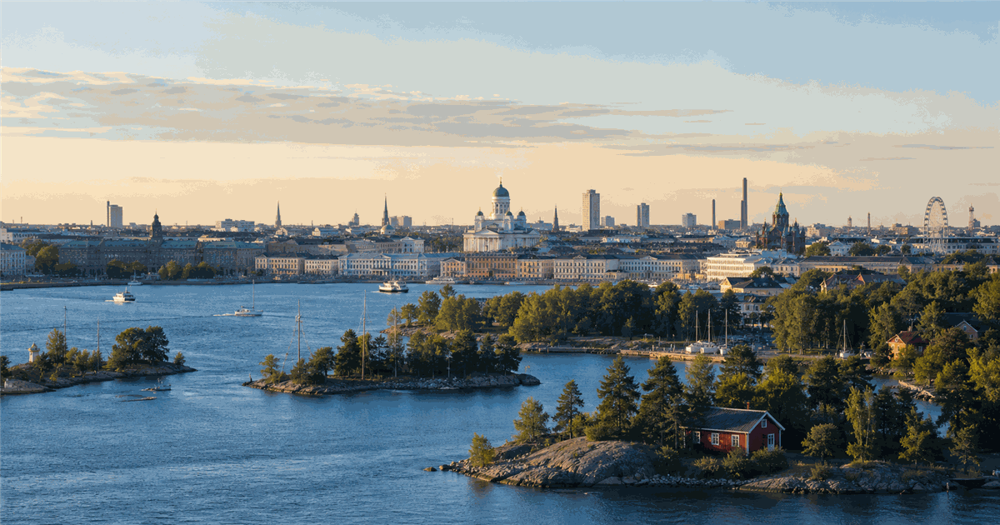
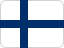
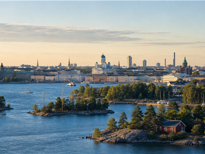

National day
A compact guide to the annual civic date, what it means and what visitors should check before going.


Independence, constitutions, republic days and civic identity dates.
The exact programme changes by city and year, but the date remains the yearly anchor.
National days are often best read through local squares, official buildings, streets and evening gatherings.
Public transport, opening hours and security routes can change because this is a public holiday.
Edition guide
Dates, place and practical notes for the selected edition.
Parent category and nearby event guides.
Location context and related events.